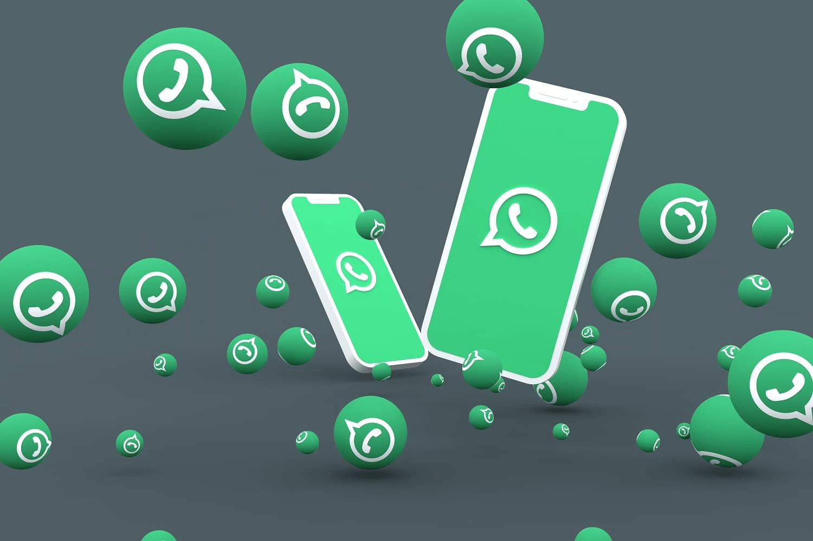

<div class="flex">
    
    <div class="relative flex flex-row flex-wrap align-middle bg-primary w-1/2 mt-5 mr-5 p-5 text-white">
        <h1 class="text-center w-full self-start">Whatsapp</h1>
        <br />
        <div class="dashboardText flex flex-row align-middle absolute w-11/12 text-justify leading-relaxed">
            <p class="flex flex-row align-middle items-center">
                WhatsApp de Meta es una aplicación de mensajería y llamadas GRATUITA usada por más de 2 mil millones de
                personas en más de 180 países. En OnBotgo ponemos a disposición de su empresa este servicio para ser
                utilizado como un canal de soporte, ventas, cobranza y un sin fin de posibilidades todo desde nuestra
                plataforma y un ecosistema que le permite llegar a sus clientes por los distintos canales de
                comunicación en un ecosistema onmicanal.
            </p>
            <!-- <br />
            <ul>
                Puedes elegir entre una atención automatizada, una atención dirigida y una atención con tus ejecutivos.
                <li>
                    Atención automatizada: te permite entregar mensajes directos y/o preconfigurados para la gestión de
                    tus clientes.
                </li>
                <li>
                    Atención dirigida: te permite guiar al cliente mediante preguntas y/u opciones a los canales de
                    atención personalizados, ejecutivos específicos o grupos de ejecutivos que gestionan bajo el
                    criterio de su empresa.
                </li>
                <li>
                    Atención con ejecutivos: te permite transferir directamente a un ejecutivo y tener una conversación
                    natural.
                </li>
            </ul> -->
        </div>
    </div>
</div>
